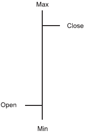
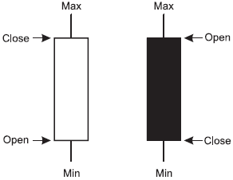
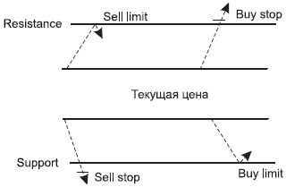
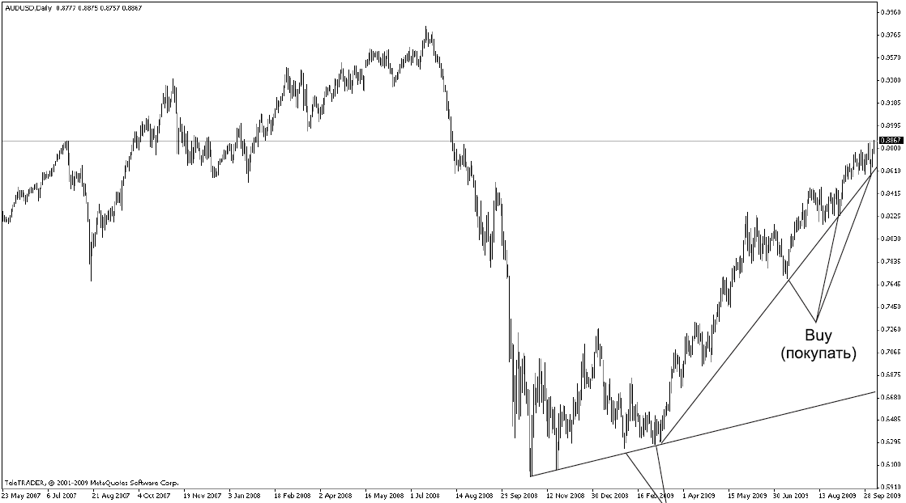
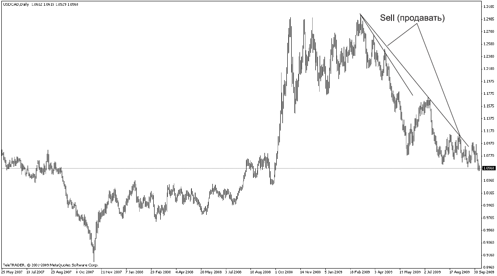
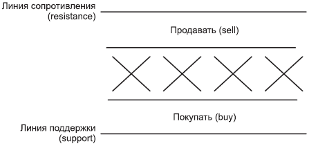
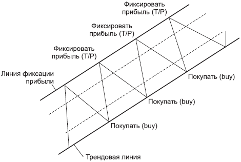
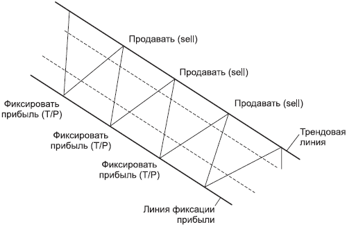

Графический метод технического анализа

Любую тенденцию (тренд) можно разбить на составляющие ее более короткие тенденции.
Компьютер сам строит для вас графики цены. Графики охватывают разные временные периоды. График часто называют чартом. Чарт – это график валютного курса.
Введем следующие обозначения:
• месячный график – Monthly (М);
• недельный график – Weekly (W);
• дневной график – Dayly (D);
• 4-часовой график – 4 Hours (4Н);
• часовой график – Hourly (Н);
• получасовой график (ЗОМ);
• 15-минутный график (15М);
• 5-минутный график (5М).
Чарты бывают линейными (line chart), столбчатыми (bar chart) и свечными (candlestick chart).
На линейном графикецены соединяются кривой. При этом можно соединять между собой либо цены продажи, либо цены покупки, либо среднее между ценами продажи и покупки. В программе указывается, на основании каких цен строится график. Обычно линии строят через цены продажи. Линейный график чаще всего используется в печатных изданиях, для анализа он не подходит.
На столбчатом графикекаждый вертикальный столбик обозначает изменение цены за выбранный вами период времени: если чарт 5-минутный, то за 5 минут, если 60-минутный, то за 60 минут.

РИС. 3.1.Столбчатый график
На рис. 3.1 используются следующие обозначения:
Min – минимальная цена за выбранный период времени;
• Max – максимальная цена за выбранный период времени;
• Open – первая цена, или цена открытия, с нее начинается движение цены;
• Close – цена закрытия, на ней столбик заканчивается.
Свечной графикпоказан на рис. 3.2.

РИС. 3.2.Свечной график
Если цена открытия ниже цены закрытия, то тело свечи белое. Это означает, что за данный период времени цена совершила восходящее движение.
Если цена открытия выше цены закрытия, то тело свечи черное. Это означает, что за данный период времени цена совершила нисходящее движение.
Если в течение выбранного периода времени цена открытия равна цене закрытия, говорят о том, что рынок находится в равновесии. Такая свеча называется дожии обозначается знаком «+».
Линии графического анализаЗамечательные линии, позволяющие разобраться в том, что происходит на рынке, называются трендоеыми:
• линия, которую цена не может пробить вверх и которая как бы сдерживает график сверху, называется линией сопротивления(resistance);
• линия, которую цена не может пробить вниз и которая как бы поддерживает график снизу, называется линией поддержки(support).
Эти линии рисуются по концам свечей. Они дают возможность совершить покупки-продажи, предупреждают события, позволяют распознавать ситуацию на рынке.
Смысл построения таких трендовых линий состоит в том, чтобы конкретизировать для себя направление тенденции и обозначить ее границы для простоты восприятия.
Если же цена нарушает границы проведенной вами линии, значит, происходят изменения в структуре движения цены. Здесь возможны следующие варианты:
• смена направления движения;
• снижение скорости движения и, как следствие этого, изменение траектории кривой графика цены;
• цена встала на месте и будет стоять какое-то время.
Это все, других вариантов нет!
Главная задача – правильно провести эти линии.
Если удалось провести параллельно и линию поддержки, и линию сопротивления, то две линии называются каналом,или коридором.
Если линии и канал идут под углом, то мы имеем дело с тенденцией (рост или падение), а если линии и коридор горизонтальные, то цена находится в этом диапазоне. Часто этот диапазон цен, как уже отмечалось, называют флэтом.Обычно флэт бывает перед сильным движением цены. В этот момент цена как будто аккумулирует силы перед рывком для своего дальнейшего движения.
Запомните, что линии нужны для определения направления трендов, а также для определения четких ценовых границ движения валютного курса в рамках данного направления.
Кроме этого, мы же с вами валютные спекулянты... Значит, мы принимаем во внимание принцип рынка: купить дешевле – продать дороже. И определяем, когда выгоднее купить или продать.
Мы с вами уже говорили о том, что выгодные покупки совершаются от линии поддержки (support), а выгодные продажи необходимо совершать от линии сопротивления (resistance).
Отложенные ордера? РЕЦЕПТ ПО РЫНКУ (из цикла «Невыдуманные истории»)
Лева сейчас – один из самых успешных трейдеров. В начале своего трейдерского пути как-то приходит в кабинет и жалуется: встал в сделку по фунту-доллару на покупку, а он прет против него. Обращается за разъяснениями к Геннадию, признанному эксперту по фунту, работающему практически только на нем: «Геннадий, скажите, а куда это намылился фунт?» Геннадий, подумав секунду, говорит: «Лев, а почему вы покупали? Чем руководствовались?» Лева растерянно: «Я нарисовал ему поддержку, он должен был от нее отскочить, а он вниз идет...» – «Так может, поддержка слабенькая?» – предположил Геннадий. «Да нет», – отвечает Лева... «Так да или нет?» – не понял Гена. «Поддержка дневная», – отвечает Лева. Геннадий задумчиво: «Так ты ее потолще нарисуй. Может, тогда ее рынок заметит!»
С тех пор повелось... Если цена идет не в твою сторону, совет один – рисуй линии потолще. Чем толще линия, тем она значимее. Это как граница. А если, например, необходимо, чтобы цена беспрепятственно падала, поступай наоборот – стирай все линии поддержки... Пусть несется! Но это, конечно, шутка.
Однако ситуация не всегда бывает столь однозначной. Предположим, вы включаете монитор и делаете анализ рынка:
1. Определяете направление тренда (ищете признаки нисходящего или восходящего движения).
2. Исходя из тренда определяете характер сделки (если тренд восходящий, то вы сегодня покупатель, если нисходящий – продавец).
3. Определяете линию поддержки: это линия покупок – именно от нее нужно покупать.
4. Определяете линию сопротивления: это линия продаж – именно от нее нужно продавать.
И обнаруживаете, что цена стоит где-то в середине рынка (на рис. 3.3 эта цена обозначена как текущая). То есть она не подошла ни к линии сопротивления, ни к линии поддержки.

РИС. 3.3.Отложенные ордера
Что делать в этом случае? Не вставать же в рынок, когда ситуация непонятная? Выход один – выставлять отложенные ордера.Принцип их установки следующий:
• если тренд восходящий,значит, сегодня вы покупаете;
• если тренд нисходящий,значит, сегодня вы продаете.
Если вы покупаете, возникает вопрос: откуда лучше купить?
Если вы сегодня покупатель,значит, вы покупаете, но не с текущей цены, а от линии поддержки (то есть дешевле, чем текущая цена). В этом случае вы ставите ордер на отскок от линии поддержки(buy limit). Но ведь может случиться, что цена не дойдет до линии поддержки, а сразу с текущей цены устремится в сторону тренда – вверх. Тогда действует следующее правило:
Если при восходящем движении цена пробивает линию сопротивления, она ускоренно поднимается вверх.
В этом случае ставится ордер на пробитие линии сопротивления(buy stop). Он ставится выше линии сопротивления, так как если цена пробивает эту линию, то восходящий тренд как бы придает ей дополнительный импульс, и цена практически летит вверх, словно радуясь своей победе над сопротивлением. На самом деле она срывает поставленные выше линии сопротивления стоп-лоссы, закрывая агрессивные позиции тех, кто открылся на продажу против тренда, и открывает отложенные ордера таких же трейдеров, как вы, выставивших ордера на пробитие. Именно это и придает ей дополнительный импульс. Это как пинок в сторону тренда. Почему и говорят, что тренд – твой друг! Из любой ситуации вытащит и поможет заработать. Выставляйте сразу два ордера: и на отскок от линии поддержки, и на пробитие линии сопротивления. Какой из них сработает, тот и даст вам прибыль. Если вдруг цена не дойдет до вашего нижнего ордера (что, конечно, предпочтительнее, ведь купить дешевле – цель любого покупателя), но нетерпение трейдеров может быть настолько велико, что их желание погнать цену вверх способно пересилить здравый смысл и подкорректировать цену перед большим движением, тогда сработает ордер на пробитие линии сопротивления и вы окажетесь своим на этом празднике жизни под названием тренд.
Теперь исследуем второй вариант, когда тренд нисходящий, что означает, что сегодня вы продаете.
В этом случае возникает противоположный вопрос: откуда лучше продавать?
Если вы сегодня продавец,значит, вы продаете, но не с текущей цены, а от линии сопротивления (то есть дороже, чем текущая цена). В этом случае нужно ставить ордер на отскок от линии сопротивления(sell limit). Но ведь может случиться, что цена не дойдет до линии сопротивления, а устремится по нисходящему тренду на пробитие линии поддержки. Тогда используем следующее правило:
Если при нисходящем движении цена пробивает линию поддержки, она ускоренно падает вниз.
В этом случае ниже линии поддержки ставится ордер на пробитие линии поддержки(sell stop). Часто выгодно ставить сразу два ордера: и на отскок от линии сопротивления, и на пробитие линии поддержки. Если цена сначала поднимется до вашего верхнего ордера – замечательно, вы сможете отменить нижний ордер, выставленный вами на пробитие линии поддержки. А можете, если позволяет депозит, выставить еще одну позицию на добавление. Если же цена не дойдет до вашего верхнего ордера, включится ордер на пробитие линии поддержки. И вы в любом случае не останетесь на обочине движения, а пойдете в сторону тренда.
Итак, подведем итоги того, по какому принципу выставляются отложенные ордера.
1. Определяется направление тренда:
• если тренд восходящий, выставляются ордера на покупку (на отскок от линии поддержки и/или на пробитие линии сопротивления buy stop);
• если тренд нисходящий, выставляются ордера на продажу (на отскок от линии сопротивления и/или) на пробитие линии поддержки sell stop).
2. Устанавливаются стоп-лоссы (принцип постановки этих ордеров мы рассмотрим в главе 5).
3. Устанавливаются тейк-профиты (принцип размещения этих параметров мы рассмотрим в главах 4 и 6).
Я очень рекомендую вам освоить принцип постановки отложенных ордеров. Очень часто, особенно для начинающих (и не только!), это является одним из важнейших аспектов работы на рынке Форекс.
? НИЧЕГО НЕ ПОНЯЛ, НО «ОТЛОЖКУ» ОТМЕНИЛ (из цикла «Невыдуманные истории»)
Дима приходит утром в дилинг, видит меня. Обычно сдержанный, а тут, видимо, наболело. Решил поделиться: «Представляешь, Ирин, вчера проанализировал рынок, выставил отложку на фунте-долларе на продажу, но перед уходом услышал разговор наших трейдеров. Вован говорил Славику: "Смотри, фунт может сюда бахнуть и уйти, не дав зацепиться". Я, честно говоря, ничего не понял, но отложку на всякий случай отменил. А утром посмотрел – действительно бахнул, и именно туда, где мой отложенный ордер стоял. У меня бы прибыль сейчас 200 пунктов уже была... Получается, слова Вована меня в блудняк ввели. Остается утешаться тем, что ход мыслей был верный».
С тех пор выражение прижилось. Теперь, когда кто-то непонятно выражает свои мысли, слышу: «Ты меня в блудняк вводишь...»
Когда вам что-то непонятно, не стесняйтесь переспросить, если мнение этого человека для вас действительно значимо.
Работа по трендуСамое простое, самое безопасное, самое скоростное и самое прибыльное, что может быть на валютном рынке, – это работа по тренду. Тренд – это действительно праздник для трейдера. Как правило, за короткий период зарабатываются очень неплохие суммы.
Как же работать по тренду?
Нужно выбрать график, который мы будем считать основным (дни, недели или месяцы), и определить направление движения цены за выбранный период. Например, можно принять в качестве основного дневной график и выяснить, куда в этот период идет цена: вверх или вниз. Это и будет направление тренда. После этого необходимо взять график с более короткими периодами: 4 часа или 1 час. Интерес этот график представляет тогда, когда движение цены идет не в сторону дневного тренда, а в противоположную. Далее необходимо дождаться, когда кривая цены на 4-часовом графике начнет заворачивать в сторону дневного тренда.
При восходящем тренде покупаем,но не с любой точки, а на временном падении цены, которое мы ищем на меньшем интервале времени(рис. 3.4).
При нисходящем тренде продаем,но не с любой точки, а на временном подъеме цены, который мы ищем на меньшем интервале времени(рис. 3.5).
Если при наличии продолжительного роста или падения цена первый раз пересекает вашу трендовую линию, всегда помните, что далее, скорее всего, последует краткосрочный откат цены, который сменится продолжением тренда.
Прежде чем тренд вверх сменится трендом вниз, должно пройти время, когда цена стоит практически на одном месте, но постоянно делает всплески в сторону, противоположную тренду, разрисовывая разворот цены. Аналогично, прежде чем нисходящий тренд сменит свое направление на восходящее, пройдет время. И в этот момент цена будет разрисовывать нам разворот наверх. Как выглядят эти развороты, мы рассмотрим в главе 4.

РИС. 3.4.При восходящем тренде покупаем на временном падении цены

РИС. 3.5.При нисходящем тренде продаем на временном подъеме цены
Каковы же признаки изменения тренда?
• Цена пересекает линию поддержки.
• Если такое пересечение произошло при восходящем движении,то далее будет падение цены.
• Если такое пересечение произошло при нисходящей тенденции,то далее будет падение цены.
• Цена пересекает линию сопротивления.
• Если такое пересечение произошло при восходящем движении,то далее будет ускорение роста цены.
• Если такое пересечение произошло при нисходящей тенденции,то далее будет рост цены.
• Цена при наличии коридора не достает до линии сопротивления.
На графике цены это самый первый признак грядущих изменений.Это будет либо смена направления, либо снижение темпа тенденции, то есть цена начнет меняться более плавно.
Работа в каналеГоризонтальный канал, как правило, определяется на дневном графике. Чтобы построить канал, необходимо выявить наибольшие и наименьшие пики, куда способна «ходить» цена, и по этим пикам провести линии поддержки и сопротивления.
Как работать в канале?
Визуально делим канал на три примерно равные части.
• Если канал горизонтальный, то:
• когда цена приходит в верхний диапазон цен, продаем;
• когда цена приходит в нижний диапазон цен, покупаем;
• когда цена находится в среднем диапазоне, в рынок не входим, а ждем прояснения ситуации.
Эту ситуацию иллюстрирует рис. 3.6.

РИС. 3.6.Работа в горизонтальном канале
• Если канал восходящий, то отдаем предпочтения покупкам от нижнего диапазона цен, а в верхнем диапазоне закрываем сделку с прибылью (рис. 3.7).
• Если канал нисходящий, то отдаем предпочтения продажам от верхнего диапазона цен, а в нижнем диапазоне закрываем сделку с прибылью (рис. 3.8).

РИС. 3.7.Работа в восходящем канале

РИС. 3.8.Работа в нисходящем канале